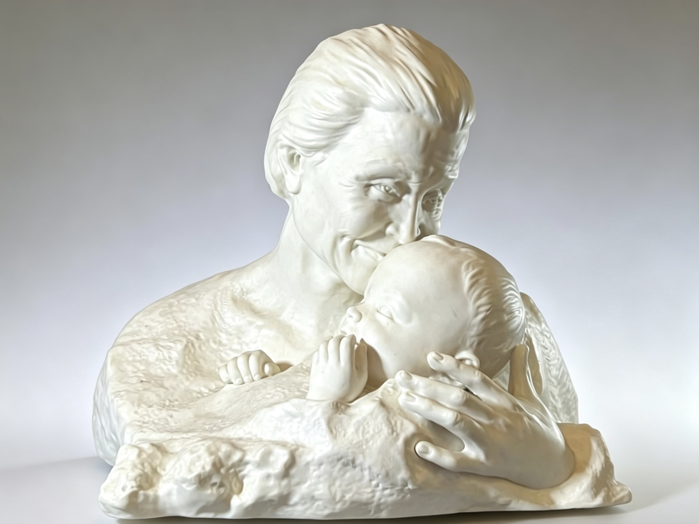
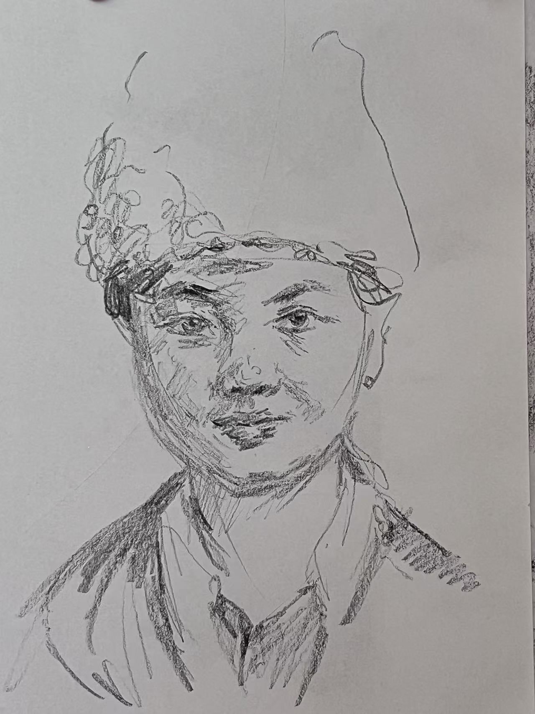

Selected Works
Each piece a quiet conversation

Mother of Ten Thousand Infants: Lin Qiaozhi
Sculpture
She was the only female academician of the first CAS members; she was the first Chinese director of obstetrics and gynecology at Peking Union Medical College Hospital.

A casual piece of work
Sketch
Just a doodle.
“Sculpture is the art of the intelligence; it is the art of giving form to the invisible.”